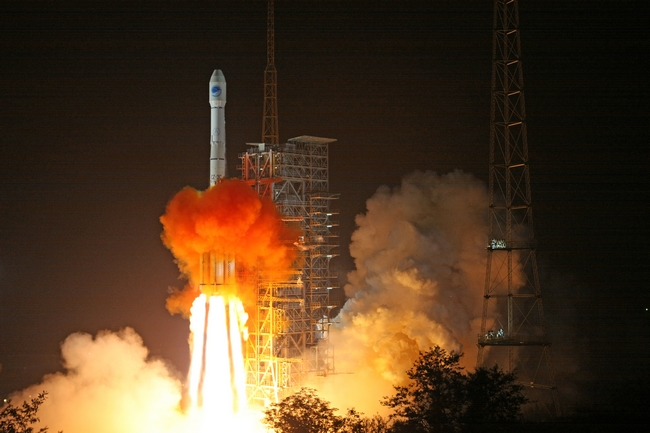

中国航天事业的发展历程(1975-2008)
 ·1956年2月，著名科学家钱学森向中央提出《建立中国国防航空工业的意见》。
·1956年3月，国务院制订《1956年至1967年科学技术发展远景规划纲要（草案）》，其中提出要在12年内使中国喷气和火箭技术走上独立发展的道路。
·1956年4月，成立中华人民共和国航空工业委员会，统一领导中国的航空和火箭事业。聂荣臻任主任，黄克诚、 赵尔陆任副主任。
·1956年5月10日，聂荣臻副总理向中央提出《建立中国导弹研究工作的初步意见》。5月26日，周恩来总理主持中央军委会议讨论同意，并责成航委负责组织导弹管理机构和研究机构。
·1956年10月8日，我国第一个火箭导弹研制机构——国防部第五研究院成立，钱学森任院长。
·1958年1月，国防部制订喷气与火箭技术十年（1958年至1967年）发展规划纲要。
·1958年，中国科学院由钱学森、赵九章等科学家负责拟订发展人造卫星的规划草案，代号为“581”任务，成立了 “581小组”，议定建立三个设计院落。8月，第一设计院成立。11月，迁往上海，改名为中国科学院上海机电设计院。
·1958年4月，开始兴建中国第一个运载火箭发射场。
·1960年2月19日，在上海郊区的一片稻田里，中国自行设计制造的试验型液体燃料探空火箭首次发射成功，火箭飞了八公里。9月，探空火箭发射成功。
·1960年11月5日，中国仿制的苏联“P-2”导弹首次发射试验获得成功。
·1962年3月21日，中国独立研制的第一枚中近程火箭发射试验失败。
·1963年1月，中国科学院成立星际航行委员会，由竺可桢、裴丽生、钱学森、赵九章等领导，研究制订星际航行长远规划。
·1964年4月29日，国防科委向中央报告，设想在1970年或1971年发射中国第一颗人造卫星。
·1964年6月29日，中国自行研制的中近程火箭再次发射试验，获得成功。
·1964年7月19日，中国第一枚内载小白鼠的生物火箭在安徽广德发射成功。
·1965年，中央专门委员会批准第七机械工业部制订的1965至1972年运载火箭发展规划。中央专委责成中国科学院负责拟订卫星系列发展规划。
·1965年10月，中国科学院受国防科学技术委员会的委托，召开第一颗人造卫星方案论证会。
·1966年6月30日，周恩来总理视察酒泉运载火箭发射基地，观看中近程火箭发射试验，祝贺发射成功。
·1966年10月27日，导弹核武器发射试验成功。弹头精确命中目标，实现核爆炸。
· 1966年11月，“长征一号”运载火箭和“东方红一号”人造卫星开始研制。
·1966年12月26日，中国研制的中程火箭首次飞行试验基本成功。
·1967年，“和平二号”固体燃料气象火箭试射成功。
·1968年2月20日，空间技术研究院成立。
·1970年1月30日，中远程火箭飞行试验首次成功。
·1970年4月24日，“东方红一号”人造卫星发射成功。这是中国发射的第一颗人造卫星。
·1971年3月3日，中国发射了科学实验卫星“实践一号”。卫星在预定轨道上工作了8年。
·1971年9月10日，洲际火箭首次飞行试验基本成功。
·1975年11月26日，中国发射了一颗返回式人造卫星。卫星按预定计划于29日返回地面。
·1979年1月7日，远程火箭试验一种新的发射方式，获得成功。
·1979年,“远望”1号航天测量船建成并投入使用,我国成为世界上第4个拥有远洋航天测量船的国家
·1980年5月18日，中国向太平洋预定海域成功地发射了远程运载火箭。
·1981年9月20日，中国用一枚运载火箭发射了三颗科学实验卫星。
·1982年10月12日，潜艇水下发射运载火箭获得成功，回收舱准确地溅落在预定海域。
·1984年4月8日，中国第一颗地球静止轨道试验通信卫星发射成功。16日，卫星成功地定点于东经125度赤道上空。
·1985年，中国正式宣布将“长征”系列运载火箭投入国际商业发射市场。
·1986年2月1日，中国发射一颗实用通信广播卫星。20日，卫星定点成功。这标志着中国已全面掌握运载火箭技术，卫星通信由试验阶段进入实用阶段。
·1988年9月7日，中国发射一颗试验性气象卫星“风云一号”。这是中国自行研制和发射的第一颗极地轨道气象卫星。
·1988年12月25日，中国科学院海南探空火箭发射场成功地发射了一枚“织女一号”火箭，至此，中国低纬度区第一次火箭探空试验圆满结束。 1989年1月，“长二捆二号E火箭”正式开工。
·1990年4月7日，中国自行研制的“长征三号”运载火箭在西昌卫星发射中心，把美国制造的亚洲1号通信卫星送入预定的轨道，首次取得了为国外用户发射卫星的圆满成功。
·1990年7月16日9时40分，中国新研制的大推力运载火箭——长征二号捆绑式运载火箭在西昌卫星发射中心发射成功，将模拟卫星送入了预定轨道。这枚火箭是由中国新建的大型航天发射设施发射升空的，同时还为巴基斯坦搭载发射了一颗小型科学试验卫星。
·1990年9月，中国成功发射了风云一号太阳同步轨道气象试验卫星。
·1991年1月22日18时23分，中国第一枚120公里高空低纬度探空火箭——“织女三号” 在中国科学院海南探空发射场发射试验成功。
·1992年3月22日，西昌，中国“长二捆”火箭发射澳大利亚“澳星”卫星（美国制造）时失败。
·1992年8月14日7时12分，西昌，我国自行研制的“长征二号E”捆绑式运载火箭顺利起飞，成功地把美国研制的澳大利亚“澳赛特B1”（澳星）通信卫星入预定轨道。
·1994年2月22日，中国第一座海事卫星地面站通过验收。它的建成填补了中国高科技的一项空白
·1997年6月，以东方红二号甲卫星平台为基础研制的风云二号地球静止轨道气象卫星成功地定点于东经105度的赤道上空。这一成就使中国成为继美国、日本、欧洲航天局和俄罗斯之后世界上第五个能自行研制发射静止气象卫星的国家。
·1998年5月2日，中国自行研制生产的“长二丙”改进型运载火箭在太原卫星发射中心发射成功。这标志着中国具有参与国际中低轨道商业发射市场竞争力。
·1999年5月，中国成功发射了经过改进的风云一号气象应用卫星。
·1999年年11月20日至21日，中国成功地发射并回收了第一艘“神舟”号无人试验飞船，标志着中国已突破了载人飞船的基本技术，在载人航天领域迈出了重要步伐。
·2000年9月，中国自行研制的中国资源二号01星发射成功，此后，又分别发射成功02星和03星，其分辨率比资源一号系列卫星更高，而且形成了三星联网，表明我国卫星研制技术实现了历史性跨越
·2000年10月和12月，两颗北斗一号导航卫星相继定点于东经140度和东经80度赤道上空。
· 2000年11月，中国国务院新闻办公室于发布《中国的航天》白皮书，白皮书确定了中国载人航天工程发展的近远期目标。
·2001年1月10日至16日，中国成功发射并回收“神舟”二号无人试验飞船。飞船按照预定轨道在太空飞行近7天，环绕地球108圈，并顺利完成预定空间科学和技术试验任务。标志着中国载人航天事业取得了新进展，向实现载人航天飞行迈出了可喜的一步。
·2002年3月25日至4月1日，中国成功发射并回收“神舟”三号无人试验飞船。“神舟”三号顺利完成一系列科学实验，为中国今后的载人航天测控和管理打下了基础。
·2002年5月，中国发射成功了第一颗海洋水色水温监测卫星——海洋一号卫星。
· 2002年12月30日，中国成功发射神舟四号无人飞船，载人飞行已为时不远。
·2003年5月25日，北斗一号导航系统的第三颗卫星发射成功，使中国初步形成了第一个区域性卫星导航系统。
·2003年10月15日，中国成功发射第一艘载人飞船神舟五号，杨利伟成为中国航天第一人。21个小时23分钟的太空行程，标志着中国已成为世界上继前苏联/俄罗斯和美国之后第3个能够独立开展载人航天活动的国家。
·2004年1月，经国务院批准，我国月球探测一期工程-绕月探测工程正式立项，进入工程研制阶段，计划2007年实施我国第一次月球探测卫星的发射任务。
·2005年10月12日，中国成功发射第二艘载人飞船神舟六号，并首次进行2人（费俊龙、聂海胜）5天飞行试验。
·2006年4月，中国发射成功了中国首颗微波遥感卫星——遥感卫星一号等。
·2007年10月24日18点06分，中国将发射“嫦娥一号”探月卫星，标志中国探月工程迈出了第一步，也是中国航天事业新的一步。